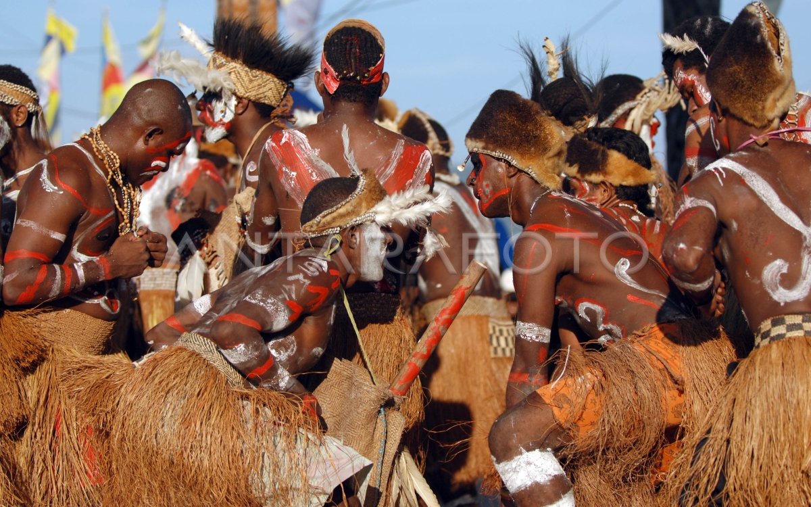

Papua Kita
Mengenal Suku Adat Papua
Suku Dani
Suku Dani adalah salah satu suku terbesar yang mendiami Lembah Baliem, Pegunungan Tengah Papua. Pakaian adat pria yang paling ikonik adalah *koteka, penutup alat vital yang terbuat dari buah labu. Sementara itu, wanita mengenakan **rok rumbai* yang dibuat dari serat rumput atau ilalang.

Suku Asmat
Suku Asmat terkenal sebagai seniman ukir yang luar biasa, tinggal di wilayah pesisir selatan Papua. Pakaian adat mereka terbuat dari serat sagu atau kulit pohon, seringkali dihiasi dengan ukiran dan warna-warna alam. Ukiran dan patung Asmat sangat terkenal hingga mancanegara.

Suku Korowai
Dikenal dengan rumah pohonnya yang unik, Suku Korowai tinggal di daerah terpencil Papua. Pakaian mereka sangat sederhana, seringkali hanya menggunakan penutup tubuh dari daun atau serat pohon. Rumah pohon ini dibangun di atas pohon tinggi untuk menghindari serangan binatang buas dan serangga.
Rumah Adat Papua

Honai
Rumah adat Honai khas dari suku Dani dan Lani. Berbentuk bundar dan terbuat dari kayu dengan atap jerami, rumah ini didesain untuk menjaga kehangatan di daerah pegunungan yang dingin.

Kariwari
Rumah adat Suku Tobati dan Enggros. Berbentuk limas segi delapan, rumah ini digunakan sebagai tempat belajar dan upacara adat bagi para pemuda.

Jew
Rumah bujang Suku Asmat. Berbentuk perahu yang panjang, rumah ini adalah pusat kegiatan sosial dan upacara adat bagi kaum pria di suku tersebut.
Kuliner Khas Papua

Papeda
Makanan pokok dari sagu yang memiliki tekstur lengket. Biasanya disajikan dengan ikan kuah kuning yang kaya rempah.

Ikan Bakar Manokwari
Ikan bakar dengan sambal khas yang pedas dan segar, cocok untuk para pecinta kuliner pedas.

Sagu Lempeng
Kue kering berbahan dasar sagu yang dimasak dengan cara dipanggang. Makanan ringan yang cocok sebagai camilan.
Fauna Khas Papua
Pilih salah satu hewan dari daftar untuk melihat deskripsinya.

Burung Cenderawasih
Si Burung Surga
Burung Cenderawasih
Dikenal sebagai "Bird of Paradise", Cenderawasih adalah ikon fauna Papua. Burung ini memiliki bulu yang sangat indah dan berwarna-warni, yang digunakan oleh pejantan untuk menarik perhatian betina saat musim kawin. Keindahannya menjadikannya salah satu burung paling terkenal di dunia.

Kasuari
Burung Darat Raksasa
Kasuari
Kasuari adalah salah satu burung terbesar di dunia yang tidak bisa terbang. Dikenal dengan tanduk (casque) di atas kepalanya dan cakar yang sangat tajam, kasuari adalah hewan yang kuat dan berperan penting dalam menyebarkan biji-bijian di dalam hutan.

Kanguru Pohon
Marsupial Pemanjat Ulung
Kanguru Pohon
Berbeda dari kanguru Australia, Kanguru Pohon adalah marsupial yang menghabiskan sebagian besar hidupnya di atas pohon. Mereka memiliki cakar yang kuat dan ekor panjang untuk keseimbangan saat memanjat. Hewan unik ini adalah mamalia endemik yang menakjubkan dari hutan Papua.
Lihat Detail Hewan
Silakan pilih hewan dari daftar di sebelah kiri.